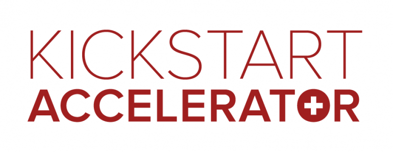
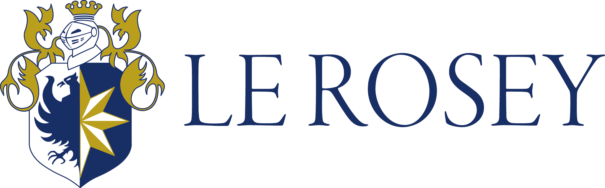
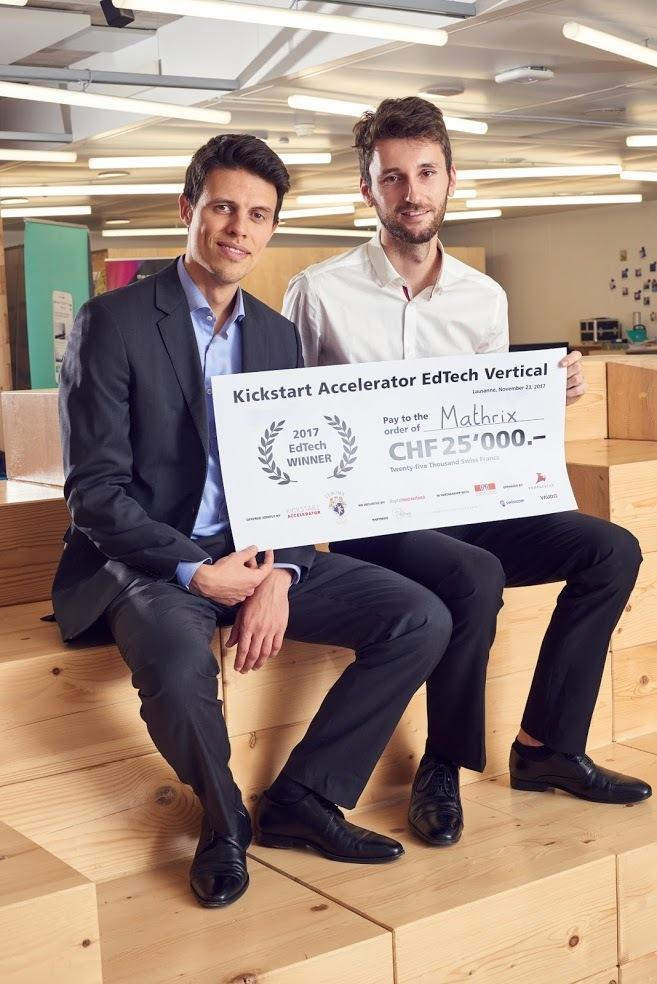
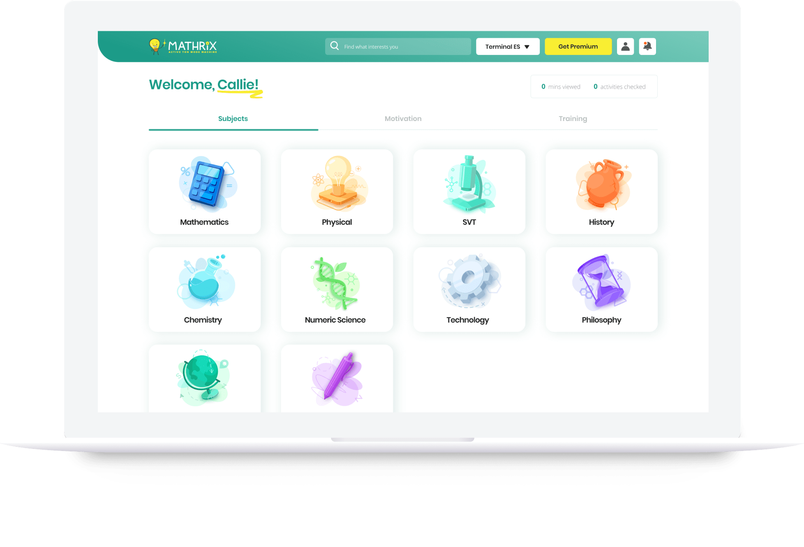

Lauréat 2017 de l'accélérateur national suisse de startups KickStart Accelerator
Premier prix : Le Rosey 2017, Rolle, VDLeur diplôme de Mathématiques à l'École Polytechnique Fédérale de Lausanne en poche, les deux cofondateurs - Filipi Cabalzar et Julien Schneider - ont pourtant bien transpiré toutes ces années.
Ils ont cependant bien compris comment aborder les mathématiques et optimiser leurs révisions.
Ils comprennent que les sciences peuvent être enseignées de manière bien plus simple et plus claire pour les élèves.
C'est dans cette optique qu'ils créent le projet Mathrix, et cofondent fin 2017 Edutech Media SA.


Objectif : aider les jeunes francophones à comprendre les sciences et mieux réussir en classe à travers des vidéos de cours, corrections vidéos, exercices intéractifs, flashcards et contrôles simulés.
Audience : jeunes francophones de 13 à 18 ans. Particulièrement de France, Suisse, Belgique et Canada.